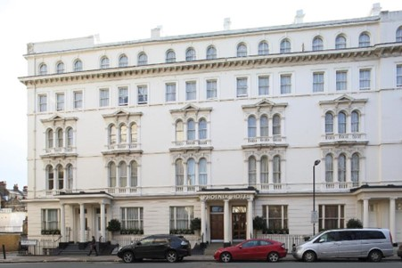

Plan putovanja London:
DAN 1 - BIG BEN
Big Ben je naziv zvonika koji se nalazi u okviru kule sa satom. Zvono je teško 13 tona. Kula se nalazi na severoistočnom kraju Vestminsterske palate. Na samoj kuli su smeštena četiri sata, koja gledaju na četiri strane sveta. Pretpostavlja se da je ime Big Ben dobio u čast Bendžamin Hola, čoveka koji je zadužen za izgradnju, ili u čast boksera Ben Kanta koji je bio veoma popularan za vreme izgradnje kule.
DAN 2 - TRAFALGAR SQUARE
Trg koji okružuje slavni Nelsonov stub dobio je ime po slavnoj bici u kojoj su Britanci pobedili Napoleona. Reč je o velikom javnom prostoru na kojem možete da sedite i uživate u fontanama s pogledom na Nacionalnu galeriju. Na ovom trgu se često održavaju javni događaji i protesti, a za vreme božićnih praznika ukrašen je jelkom koja čini da ovo mesto izgleda kao iz bajke.
DAN 3 - WEMBLEY STADIUM, EMIRATES STADIUM, TOTTENHAM HOTSPUR STADIUM I STAMFORD BRIDGE

Stadion Vembli (engl. Wembley Stadium) je fudbalski stadion u londonskoj opštini Brent (Engleska). Izgrađen je na mestu nekadašnjeg „starog Vemblija“ sagrađenog 1923. godine. Svečano je otvoren 9. marta 2007. godine. Prema kriterijima UEFA Vembli stadion se ubraja u najmodernija fudbalska zdanja i kategorisan je sa 5 zvezdica. Sa kapacitetom od 90.000 sedećih mesta drugi je po veličini stadion u Evropi. Stadion je u vlasništvu Fudbalskog saveza Engleske i na njemu svoje utakmice igra fudbalska reprezentacija Engleske. Na Vembliju se održavaju i neke od utakmica završne faze nacionalnog FA kupa. Takođe, 2011. tu je održano finale Lige šampiona u fudbalu. Finalne utakmice fudbalskog olimpijskog turnira 2012. su igrane upravo na Vembliju.

Emirejts stadion (Emirates Stadium) je fudbalski stadion u severnom Londonu u oblasti Halovej. To je domaći stadion FK Arsenala. Sa kapacitetom od 60.272 mesta, ovo je treći najveći stadion u Engleskoj, nakon Vemblija i Old Traforda. Kvalitet Arsenalovog terena je prepoznat i na međunarodnom nivou, što je dovelo do toga da su mu navijači i širi sportski mediji dali nadimak "tepih". Od 2009. godine stadion je prošao kroz proces „Arsenalizacije“ sa ciljem da se vrate vidljive veze sa istorijom Arsenala.

Stadion Totenhem hotspur (Tottenham Hotspur Stadium) je fudbalski stadion u severnom delu Londona, na kojem svoje utakmice kao domaćin igra Totenhem Hotspur. Zamenio je stari stadion Vajt Hart Lejn, koji je srušen 2017. godine. Kapacitet stadiona je 62.303 sedećih mesta. Dizajniran je kao višenamenski stadion i ima dve različite podloge, na vrhu je hibridna trava za fudbal, dok je ispod teren sa veštačkom travom za NFL utakmice, koncerte i druge događaje. Ovaj stadion smatra se najmodernijim na planeti, sa ukupnom vrednošću od preko milijardu funti. Trenutno ime, stadion Totenhem Hotspur, je privremeno, jer klub namerava da proda pravo imenovanja, tako da bude imenovan po sponzoru.

Stamford Bridž je fudbalski stadion u Fulamu, pored opštine Čelsi u zapadnom Londonu. To je dom premijerligaša Čelsija. Sa kapacitetom od 40.022, to je deveti najveći stadion u sezoni Premijer lige 2024-25 i jedanaesti najveći fudbalski stadion u Engleskoj. Otvoren 1877. godine, stadion je koristio Londonski atletski klub sve do 1905. godine, kada je novi vlasnik Gas Mirs osnovao fudbalski klub Čelsi da bi zauzeo teren - Čelsi od tada igra svoje domaće utakmice tamo. Tokom godina je pretrpeo velike promene, poslednji put 1990-ih kada je renoviran u moderan stadion sa kapacitetom od 40834 sedišta.
REZERVACIJA PUTOVANJA

Avio aranžman:
Autobus aranžman:
Izvršite rezervaciju